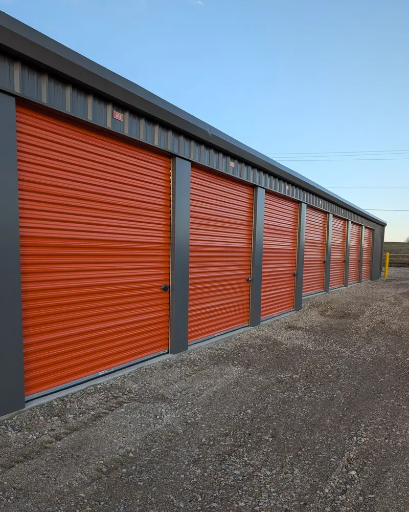
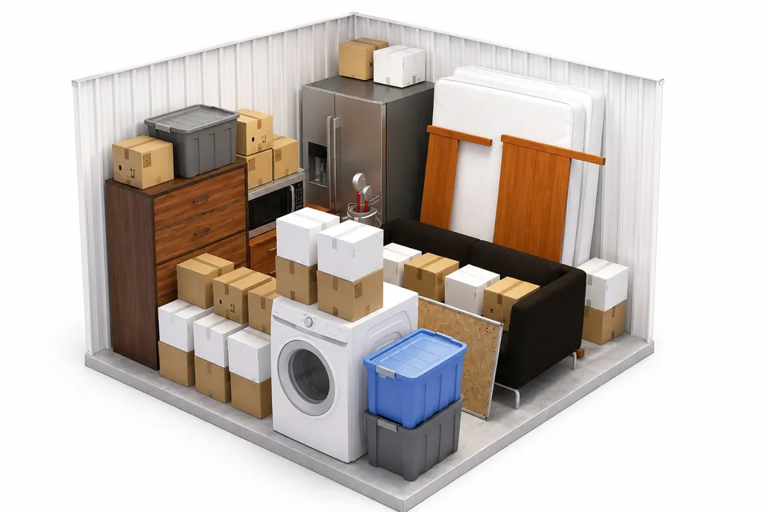
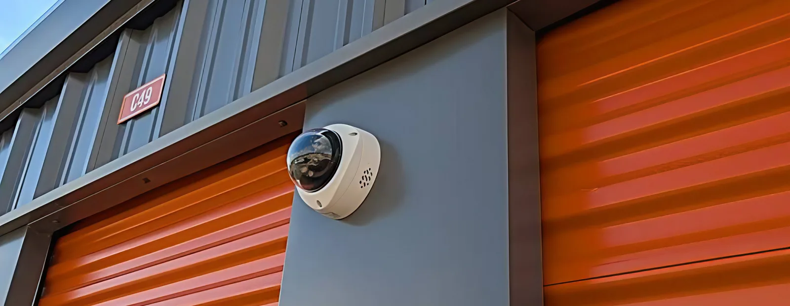

Tips for Storing Items Long-Term
Packing, layout, labels and a photo inventory for a unit you will keep a year or more.

A unit you will empty in six weeks can be packed almost any way. A unit you will keep for a year or more needs a plan, because boxes sag, memory fades and the thing you need is always against the back wall. This guide covers what matters over a long stay: how to pack and stack, how to lay out the unit, what to write down, when to visit and how the billing works. Heat and moisture have their own article, protecting belongings from Kansas humidity, so they get only a passing mention here.
Rent for the Layout, Not Just the Volume
Size charts assume everything is stacked tight. For a long stay you want a walkway and a floor of pallets, and both use space. If your load fills a 10×10 wall to wall, a 10×15 will be far easier to live with. At the time of writing a 10×10 is $95 a month in Hutchinson and $65 in South Hutchinson, and a 10×15 is $105 and $75, so the step up is $10 a month at either location. Prices can change, and current rates are listed by location. The size guide shows what each size holds.
Pack Boxes That Can Carry Weight for a Year
- Buy boxes in two or three sizes. Matching boxes stack into straight columns. A mix of odd boxes leans, and a leaning stack gets worse every month.
- Fill each box to the top. A half-empty box crushes under the one above it. Top off with towels or packing paper.
- Put heavy things in small boxes. Books and tools go in small boxes at the bottom of a stack. Lamp shades and bedding go in large boxes on top.
- Use real packing tape. Bargain tape dries out and lets go. Tape the bottom seam twice.
Lay Pallets Before the First Box Goes In
Cover the floor with pallets before you unload anything. They keep cardboard and furniture legs off the concrete and let air move under the load. Pick pallets that are dry, with no broken boards and no nails standing proud. Where furniture legs would drop between the slats, lay a sheet of plywood or flattened cardboard on top.
A Layout That Still Works in Month Ten
Every unit at both locations is drive-up with a roll-up door, so you load from one end. Plan from the back wall forward.
- Back wall: the things you won’t touch until move-out. Large furniture, mattresses in bags, boxed keepsakes.
- Side walls: columns of boxes, heaviest at the bottom, labels facing the walkway. Stop at shoulder height so you can lift a box down safely.
- Walkway: a clear path from the door to the back wall, wide enough to carry a box through. In a 10-foot-wide unit, run it down the middle. In a 5×10, run it along one side.
- By the door: anything seasonal or likely to be needed, such as holiday totes, tax files, tools and a box of kitchen basics.
Take beds, tables and desks apart. Bag the hardware, label the bag and tape it to the largest piece. Stand table tops and headboards on edge against a wall with a blanket between them. Don’t stack anything on upholstered furniture, since cushions take a permanent set under a year of weight.

Label So a Stranger Could Find Things
In a year you will not remember which box holds the stand mixer. Number every box and write the number, the room and three or four specific contents on two adjacent sides, never only on the top. “Box 14, kitchen: mixer, blender, baking pans” is a label. “Kitchen misc” is not.
Keep an Inventory With Photos
Make one list, on your phone or on paper, with a line for each box number and each piece of furniture. Then take photos:
- Each valuable item, plus the serial numbers on appliances, tools and electronics
- The inside of any box holding things you would want to claim for
- The finished unit from the door: one wide shot and one of each wall
Keep the list and photos somewhere other than the unit, and email yourself a copy. The wide shots tell you where a box is before you drive over. The item photos do a second job. If you carry the optional tenant protection plan and ever file a claim, SafeLease asks for receipts or photos as proof of value. The plan comes in $2,000, $3,000 and $5,000 levels with a $100 deductible per claim, and your inventory is the simplest way to choose between them.
Visit a Few Times a Year
Nothing requires you to visit, but a unit left alone for a year hides small problems. Go every two or three months and run the same short check:
- Look for stacks that have started to lean, and restack them
- Press on the bottom boxes to find soft spots
- Look along the floor and in the corners for droppings or chewed cardboard
- Check that covers are still in place and the lock turns smoothly
- Update the inventory if you took something home or added to the unit
Between visits, cameras at both locations record 24/7 and every aisle is lit. The Hutchinson location at 2511 E 17th Ave also has a perimeter fence and gated entry. The security page has the details.
How Billing Works When You Stay a Long Time
There is no long-term contract to sign and none to break. Every rental is month-to-month, whether you stay two months or several years. Rent is paid through the online tenant portal by card, Cash App or ACH. Cash is not accepted. Set up autopay in the portal so a long stay never turns into a missed payment. If you add the protection plan, it is billed with the rent and can be cancelled on its own at any time.
Over a long stay, the thing that usually goes wrong is contact details. If you move, change your phone number or replace a card, update the portal so payments go through and notices reach you. When you are ready to leave, give notice before the end of the month and empty the unit. Active duty military, veterans and first responders get 15% off, which adds up over a long rental.
Frequently Asked Questions
How long can you rent a storage unit in Hutchinson, KS?
At Reno County Storage you can rent for as long as you like. Every rental is month-to-month with no long-term contract, at both 2511 E 17th Ave in Hutchinson and 712 N Walnut St in South Hutchinson. To move out, give notice before the end of the month.
Should I put pallets on the floor of my storage unit?
Yes, for any stay longer than a few months. Pallets keep boxes and furniture off the concrete and let air move underneath. Choose dry pallets with no broken boards, and lay plywood or flattened cardboard over them under furniture legs.
How should I label boxes for long-term storage?
Give every box a number and write the number, the room and a few specific contents on two sides, not just the top. Keep a matching list on your phone with one line per box. Stack boxes with the labels facing the walkway so you can read them without moving anything.
How often should I check on a storage unit I am renting long-term?
Every two to three months is enough for most units. Look for leaning stacks, soft boxes, signs of rodents and covers that have slipped, and update your inventory if anything came or went.
You can rent online at Hutchinson or South Hutchinson: pick a unit, sign the lease, pay and get access right away. A free lock comes with every rental. For help choosing a size for a long stay, call (620) 662-7336.
More from the Blog
How to Protect Your Belongings from Kansas Humidity
Our units are insulated, not climate-controlled. What stores fine through a Kansas summer, and what needs extra care.

Climate Controlled vs. Regular Storage: Do You Really Need It?
When climate-controlled storage is worth the premium and when a standard drive-up unit is the smarter choice for your belongings.

What Is Tenant Protection and Do You Need It?
$2,000 to $5,000 of coverage with a $100 deductible: what the plan covers, what it excludes, and how to claim.